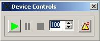

GETTING
STARTED
INSTALLATION:
The
program does not have an installation program! Simply copy the
main executable (GenP.exe) into the directory of your choice, and
start using it!
USING THE PROGRAM:
The main screen consists of The
Rhythm Chart. There are four lines in the Rhythm Chart, labelled
Right Hand, Left Hand, Right Foot and Left Foot respectively. For
each of these, you can create a unique pattern. The pattern
creation is split into various sections. Firstly, the rhythm
pattern, then the accent pattern, then the note values, then the
subdivisions. You can choose each of these yourself, or let the
program generate random ones for you. You can also select the
amount of bars the exercise should be generated for, and the
count to be used. These settings can be changed in the small
panel above the Rhythm Chart. To access the pattern options,
middle click on the lane you wish to change. You can enter a
rhythm or accent pattern in the specified boxes, or let the
program generate random ones for you. A pattern consists of 2
characters: 'x' indicating a note, '-' indicating a rest. All
rhythm patterns are constructed using these characters. Accent
patterns are constructed using 'X' to indicate an accent, and 'x'
or '-' to indicate normal note volume. A row of buttons presents
the different note values that can be used for the specific limb
(Whole, Half, Quarter, Eighth, Sixteenth and Thirty-Second
Notes). Selecting the “Mute” button will disable the
sound of that specific limb. When the button is depressed and
gray, it is considered not muted. When the button is pressed and
coloured yellow, it is considered to be muted. The program works
with subdivisions in a unique manner. Please see the “Complex
and Inverse Subdivisions Section. If you want to quickly edit a
pattern, move the mouse over the Rhythm Chart, and a grid will be
displayed. Right click for options, and left click on a cell to
perform the selected action.
NOTE: The notation used for this program is NOT
standard drum notation. Instead, the program uses 4 percussion
lines, with non-standard note heads. I am certainly sorry for any
inconvenience, but I believe this system is better, as individual
limb patterns can be created without necessarily being restricted
to a certain voicing. Also, various subdivisions can be used,
creating the ultimate independence exercise!
COMPLEX AND INVERSE SUBIDIVISIONS
The idea is from a method I designed. Instead of playing a subdivision only between 2 notes, why don't we generalise it a bit? Why not have 4 notes in the space of 3? This is now possible. The “Subdivisions” box lets you specify the amount of notes you want (up to 9) and the amount of notes you want them to be spaced in, which can be specified in the “Subdivision Note Spacing” box. To turn off complex subdivisions, deselect the “Enable Complex Subdivisions” check box in the “General Options” window. If you just want to use basic subdivisions, remember to set the “Subdivision Note Spacing” to 2.
DEVICE CONTROLS

The
device controls can be viewed/hidden by selecting the “Device
Controls” option in the “Windows” menu. This
form contains the MIDI controls. From here you can play, stop or
pause the MIDI playback. When these buttons are inaccessible they
appear flat and greyed out. Next to these buttons is a box
containing an up and a down arrow, and a number. This is the
tempo to play the exercise at, and can be used to quickly change
the tempo. Next to this is a button with a small metronome image.
In the top right corner will appear either a red circle or a
green checkmark. This is to indicate whether or not the metronome
sound is on or off.
THE KIT VOICING FORM
To
access the kit voicing options, select “Tools” and
then “Voicing / kit Designer” from the main menu.
Alternatively, you can click on the crossed drumsticks icon on
the toolbar. On the voicing form, there are two images. At the
top, the larger rectangle, is used to hold voicing data for the
hand patterns. At the bottom, the smaller rectangle is used to
hold voicing data for the feet patterns. Click on one of the
radio-buttons representing the limbs in order to start drawing a
voicing pattern. To get a visual representation of what you are
playing, you might want to draw a version of your own drumkit on
the canvases. Click on the "Design Mode" button to
activate design mode. The Design Options will now become
available to you. You can select which shape to draw, how thick
its lines are, and what colour the lines should be. You can also
assign certain areas to a specific sound (Multiple Voicings per
limb need to active to do this. If this is not activated, a
standard template will be used which cannot be edited). If you
want to save a voicing pattern, select "Save" for
either the hands or the feet. Go to the directory in which you
wish to save the files, type in the desired name, and then press
save. If you want to load a voicing pattern, select the "Load"
option for either hands or feet, locate the Voicing data file and
click load.
THE PLAY ALONG FORM
This
form displays the kit with the voicings created in the Kit
Designer. To access it, select “Play Along Kit” from
the “Tools” menu. The colour for normal and accented
notes can be chosen from the colour boxes at the top of the form.
When the exercise is played while this form is open, the
appropriate parts of the kit will light up to indicate that the
current note is being played there.
STICKING PATTERNS
To
access this feature, select “Sticking Patterns” from
the “Tools” menu. Press the “Generate”
button to generate a random sticking pattern. This pattern can be
inverted (Right changed to left and vice versa) or reversed
(First note last, etc.) by pressing the appropriate button. The
resultant pattern can be used as a standalone exercise, or it can
be applied to any two of the four limbs by simply selecting which
limbs you want to apply the pattern to from the appropriate
groups of options, and the pressing the “Apply”
button. The pattern can also be saved to the Pattern Repository
by clicking the “Add to Pattern Repository button.
RHYTHM TRAINER
To
access this feature, select “Rhythm Trainer” from the
“Tools” menu. This feature allows you to make your
own speed and time exercises. Select, in the “New Item”
group, the settings for which you would like the metronome to
pulse. Then press the “Add Item” button. Up to 255
different settings can be entered. All the items will be
displayed in the grid on the left-hand side of the screen. The
Custom Pulse feature uses the same characters as the Metronome's.
'X' for an accented note, 'x' for an unaccented note, and '-' for
no note. Options regarding the exercise include: Repeat. Once the
exercise has been played through, the timer will start at the
beginning again if this box is checked. Loop Front to Back. If
this box is checked, the exercise will be played through, and
then played backwards.
If you have a device capable of MIDI
Input, you can also play along to the exercise to check your
progress. Check the “Pad Active” Box. A small text
pop-up will display how accurately you are playing to the
click.
If you want to use the pad to play an exercise, check
the “Check Voicing” box. Load a pattern from the
sticking patterns form or from the pattern repository. You can
select the voicings to be regarded as “correct” for
the 2 limbs. When the exercise is playing, a small text pop-up
will inform you if the voicing you are playing is right or
wrong.
PATTERN REPOSITORY
The
Pattern Repository appears on the right hand side of the screen.
Here, patterns that have been generated can be stored. This is
useful for generating random exercises, and then replacing single
patterns with those stored in the repository. Patterns are
automatically added to the repository if randomly generated (to
turn off this feature, uncheck “Automatically Add Patterns
to the Pattern Repository” in the General Options window).
Patterns can be deleted or applied by right-clicking the
appropriate pattern in the repository. To save or open a set of
Pattern Repository patterns, select the appropriate option from
the “File” Menu.
SAVING AND LOADING PATTERNS
To save or load
patterns, select “File” from the main menu and select
the appropriate option.
MIDI DRUMS
To
access the MIDI options, select “Options” and then
“MIDI Options” from the main menu. Here, you can
select normal and accented note volumes and select the sounds
that should be played. There are two modes in which the drums can
function, Single Voicing and Multi Voicing Mode. In Single
Voicing Mode, each limb plays only one sound. The notes for all
the limbs are represented using the same standard symbol. In
Multi Voicing Mode, each limb can play a variety of sounds (up to
10 different sounds) and each sound is represented by a different
symbol. Each sound also has a unique letter (Standard letter is
x). A '?' means that that specific symbol will not be used. When
in Multi Voicing Mode, you can use the characters specified to
create patterns on the Rhythm Chart. These characters should be
entered into the appropriate boxes (excluding accent patterns) or
via the right click menu of the Rhythm Chart. You can also select
the device that should be used for MIDI output and/or input. A
message will be displayed upon start-up and on refreshing the
device lists if MIDI input and/or output devices have not been
found.
NOTE: If at least one device has not been found
for either MIDI input or output, features using them will be
deactivated.
THE METRONOME
To
access the metronome form, select "Options" and then
"Metronome Options" from the main menu. Here, you can
set the tempo for the metronome (which is also the tempo for the
MIDI drums), the note values, and the subdivision value for the
metronome pulse. Whether or not the metronome should play and/or
show the current position on the grid can be changed using the
appropriate check boxes.
The volume for the metronome can be
changed at the bottom of the form.
You can also enter your
own pulse pattern, by checking the "Custom Pulse Pattern:"
box, and then entering your own pattern. Pulse patterns should be
entered as follows : 'X' indicates an accented note. 'x'
indicates a normal note. '-' indicates a rest, or no note. Pulse
patterns can be of any length up to 255 characters.
The
sliding bar that keeps track of where you are on the rhythm chart
pulses along with the metronome, and also shows subdivisions the
metronome might be playing. Note that the slider can only be set
to start on a pulse of the metronome e.g if the metronome is set
to quarter note triplets, you cannot start the exercise on an
eighth note.
HISTORY
This gives the user the ability to save
various patterns temporarily within the program. Patterns are
automatically saved and loaded as the user uses the program. The
stored patterns (Maximum of 10) can be accessed by using the
arrows above the Rhythm Chart. To clear the history, click on the
"Clear History" button which appears on the bottom of
the window alongside all the other clear functions. To add a
comment to a pattern, click the “Comment” button next
to the current pattern number. This will display a form with the
current comments, if any. Comments may be up to 255 characters
long. When a pattern is loaded and a comment is present, by
default, the window will be displayed with the comment. To turn
of this feature, deselect “Display Pattern Comments”
from the General Options menu.
PATTERN FEATURES
To invert or reverse patterns,
click on the "Functions" menu option and select the
option of your choice. Alternatively, you can right click on the
appropriate pattern in the Pattern Options section, and a pop-up
menu will display the available options.
ACCENT OPTIONS
These options are available from the
General Options Menu. When 'Shift' is selected, the Accent
pattern is applied over a new Rhythm pattern as usual. When
'Adapt" is selected, and notes are deleted / added, the
Accent pattern is adapted so that the all the notes that
previously had accents still do, and new notes do not.